A Ugrad é uma plataforma que reúne alunos, professores e investidores, fornecendo um meio conveniente e capaz de mostrar ao mundo o trabalho, a qualidade dos projetos de TCC e o potencial de seus desenvolvedores.
Trabalhe conosco

Tire as ideas do papel
A Ugrad é uma plataforma que reúne alunos, professores e investidores, fornecendo um meio conveniente e capaz de mostrar ao mundo o trabalho, a qualidade dos projetos de TCC e o potencial de seus desenvolvedores.
Trabalhe conosco

A Ugrad reúne projetos de TCC de anos passados para disponibilizá-los à outros alunos que desejam ter inspiração para seu próprio projeto e para todos que veem potencial em suas propostas.
Contas Ugrad de aluno e professor podem ser criadas apenas através de um código específico criado para cada instituição educacional, enquanto contas de investidor ou empresa podem ser criadas livremente.
Investidores podem visualizar e pesquisar projetos por nome, turma ou ano, ver perfis de usuários e deixar comentários.

Professores, além disso, conseguem também organizar alunos em classes, podendo visualizar projetos não publicados para direcionar e auxiliar com feedback.

Alunos também podem criar projetos, ajuntando-se com seus Co desenvolvedores para criar uma descrição do projeto e documentar sua história, então publicando-o ao mundo, abrindo a porta para que todos possam ver e comentar em seu trabalho, alcançando possivelmente muitos interessados.